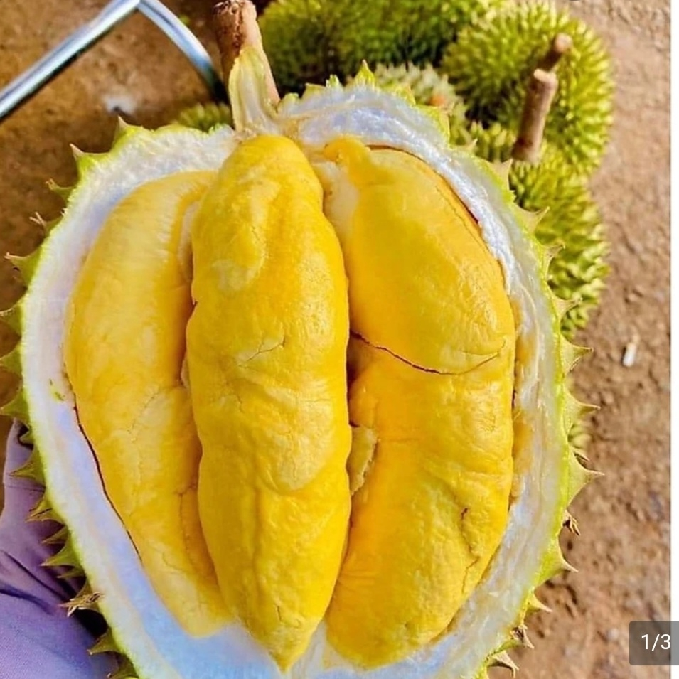

Sầu Riêng Iri 6 - Một Sản Phẩm Độc Đáo và Bổ Sung Dinh Dưỡng

| Mã sản phẩm | [Mã sản phẩm] |
|---|---|
| Xuất xứ | tỉnh Đồng Nai |
| Đặc điểm | Màu xanh và chuyển sang màu vàng khi chín. Vỏ mỏng, da căng bóng, phủ lớp nhựa bảo vệ. |
| Trọng lượng | Mỗi trái có trọng lượng tầm 1-2 kg, tùy theo từng trái. |
| Công dụng | Sầu riêng Iri 6 là nguồn vitamin và khoáng chất quý, đặc biệt là chất béo có lợi. |
| Cách bảo quản | Sầu riêng nên được bảo quản ở nhiệt độ phòng và tránh ánh nắng trực tiếp để duy trì hương vị và chất lượng tốt nhất |
Sầu riêng ri6 có nguồn gốc từ phương pháp trồng và nhân giống vào cuối của thế kỷ 20 của cụ Sáu Ri ở ở ấp Phước Định 1, xã Bình Hoà Phước huyện Long Hồ, tỉnh Vĩnh Long, là loại sầu riêng với độ thơm ngon dẻo ngọt nhất thời bấy giờ, chiếm được vị trí đầu bảng trong làng sầu riêng, từ đó người người, nhà nhà xin giống cây của cụ về trồng và lấy tên gọi là sầu Sáu Ri, về sau này mọi người quen gọi thành sầu riêng Ri Sáu (Ri6),
Để phân biệt sầu riêng ri 6 so với các loại sầu khác thì đối với người mới hoặc ít dùng thì có thể sẽ có những khó khăn do đặc thù của sầu riêng tất cả các loại đều có điểm chung về hình dáng kích thước, mùi vị, màu sắc... đều na ná nhau
Tuy nhiên đối với người sành 1 hoặc từng nếm các loại sầu rồi thì việc phân biệt các loại sầu riêng khác nhau lại vô cùng đơn giản, nhất là đối với sầu riêng ri 6
Thông thường để phân biệt sầu riêng ri 6 ta chỉ cần nhìn bề ngoài cũng có thể phân biệt được, bề ngoài sầu ri 6 có hình dáng thon dài và tròn đều theo chiều dọc trục quả, trên quả có phân tách hộc múi nhưng không rõ ràng như sầu thái, màu sắc sầu ri 6 sẽ có màu xanh nhạt có thời điểm sẽ thêm chút hơi hơi vàng Về múi và chất cơm sầu riêng ri6 cũng khá dễ phân biệt, sầu riêng ri 6 tách sẵn múi sẽ có màu vàng đậm hơn so với những loại khác, để biết múi sầu có chất lượng tốt thì nhìn bề ngoài múi nó sẽ hơi nhăn bề mặt, với màu vàng óng ả và mùi thơm nồng rất đặc trưng
 Bánh Tét Cần Thơ
Bánh Tét Cần Thơ Khô Cá Đù
Khô Cá Đù